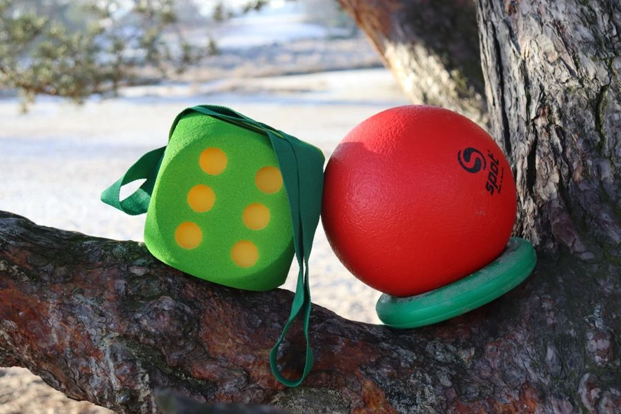

Coaching & workshops
Bewegen is de sleutel tot welzijn. Praktische coaching en workshops die je aanzetten tot actie, individueel of met je team.


Zo werkt coaching & workshops
Onze coaching en workshops richten zich op bewustwording en het belang van beweging. Je krijgt praktische inzichten die je aanzetten tot actie, zodat beweging een vast onderdeel wordt van je dagelijks leven. Voor teams verzorgen we interactieve workshops over bewegen, energie en samenwerking.
Waarbij kan het helpen?
- Meer energie en balans in je dag
- Beweging inbouwen in een druk leven
- Bewuster omgaan met spanning en ontspanning
- Teamworkshops over vitaliteit en samenwerking
- Concrete, haalbare actiepunten
Elk traject is maatwerk: we sluiten aan bij jouw vraag en tempo.
Hoe ziet een traject eruit?
Kennismaken
We verkennen jouw vraag of die van je team.
Doelen bepalen
Wat wil je bereiken en wat is haalbaar?
Coaching of workshop
Actieve sessies met praktische opdrachten en inzichten.
Actieplan
Je gaat naar huis met concrete stappen die je meteen kunt zetten.
Coaching is individueel; workshops verzorgen we voor groepen en teams, op onze locatie of bij jou op de werkvloer.

Wat kost het?
Coaching en workshops: tarief op aanvraag, afhankelijk van programma en duur. Je ontvangt vooraf een heldere offerte op maat.
Vergoeding hangt af van je situatie, verzekeraar of gemeente, we geven hierover geen garanties, maar denken graag met je mee.
Wie verzorgt dit aanbod? Het team van Standup Zorg, afhankelijk van jouw vraag.
Meld je aanGoed om te weten
Wat is het verschil tussen coaching en therapie?
Coaching richt zich op bewustwording en praktische doelen; therapie (zoals PMT) is een behandeling bij vastlopen in gedrag of emoties. Twijfel je? We adviseren eerlijk wat past.
Verzorgen jullie ook workshops op locatie?
Ja, workshops geven we graag op jouw locatie, afgestemd op je team en doelen.
Hoe lang duurt een coachingtraject?
Dat spreken we samen af: van een enkele sessie tot een kort traject met vervolgafspraken.
Wat kost een workshop?
Het tarief hangt af van groepsgrootte, duur en inhoud. Vraag vrijblijvend een offerte aan.
Klaar om te beginnen?
Meld je aan of stel je vraag, binnen twee werkdagen nemen we contact met je op om een vrijblijvende kennismaking te plannen.